在使用scaffolded時無意發現有這個QueryableExtensions.Include方法，
到底他的作用是什麼呢？如何用？以下重現原問題。
一、先準備資料庫
CREATE TABLE [dbo].[CATEGORY] ( [category_id] [TINYINT] NOT NULL, [categoryType] [NVARCHAR](5) NOT NULL, PRIMARY KEY (category_id) ) CREATE TABLE [dbo].[NEWS] ( [news_id] [UNIQUEIDENTIFIER] NOT NULL, [title] [NVARCHAR](50) NOT NULL, [date] [DATE] NOT NULL, [category_id] [TINYINT] NULL REFERENCES CATEGORY(category_id), [context] [NVARCHAR](max) NULL, PRIMARY KEY (news_id) ) -- `dbo.CATEGORY` INSERT dbo.CATEGORY VALUES (1, N'公告訊息') INSERT dbo.CATEGORY VALUES (2, N'臨時公告') -- `dbo.NEWS` INSERT dbo.NEWS VALUES (N'77289FB6-A7BA-770A-F801-09FF58D932B8', N'中華民國口腔病理學會-口腔扁平苔癬症病人口腔預保健計畫研討會', '20170724', 2, N'<p><img src="/Dentist/AdminConsoleNEWS/GetImage?img_id=1583980530&news_id=77289fb6-a7ba-770a-f801-09ff58d932b8" style="height:1415px; width:1000px" /></p> ') INSERT dbo.NEWS VALUES (N'64C56473-A7CC-B749-BC01-9B93A17468C7', N'嬰幼兒齲齒 何時該做口腔檢查？', '20170811', 1, N'<p><img src="/Dentist/AdminConsoleNEWS/GetImage?img_id=1101658763&news_id=64c56473-a7cc-b749-bc01-9b93a17468c7" style="height:350px; width:610px" /></p> <p>嬰幼兒究竟該何時開始檢查牙齒呢？根據美國兒童牙科醫學會兒童家庭牙醫觀念，當第一顆乳牙長出後，最慢在一歲前，家長就可帶嬰幼兒接受口腔檢查；兒童牙科醫師鄧醫師指出，透過專業醫師協助，給予適合的潔牙衛教以及嬰幼兒飲食習慣等建議，讓家長們可以確保嬰幼兒的口腔健康。 <br /> <br /> ') INSERT dbo.NEWS VALUES (N'CF74B42D-A7BC-6C45-F501-A4431F8F248F', N'植牙也要精準！？醫師透露關鍵', '20170726', 1, N'<p><img src="/Dentist/AdminConsoleNEWS/GetImage?img_id=1554305787&news_id=cf74b42d-a7bc-6c45-f501-a4431f8f248f" style="height:479px; width:800px" /></p> <p>缺牙會降低進食功能、說話發音，更會影響信心與門面，長期下來，對身心健康影響很大！隨著醫療科技發展，透過植牙手術能夠再度擁有一口好牙；牙科醫師並指出，藉由電腦3D軟體設計及列印技術製作的導引式植牙手術板，可以輔助植牙的精準判讀，不但大幅降低手術時間、傷口大小，就連復原時間也較快。 <br /> <br /> ') INSERT dbo.NEWS VALUES (N'5CFB5EF1-A7BA-2152-F801-A9108AC4E6B1', N'社法人中華民國牙醫師公會全國聯合會-106年國小學童含氟漱口水齲二年計畫', '20170724', 2, N'<p><img src="/Dentist/AdminConsoleNEWS/GetImage?img_id=2050639876&news_id=5cfb5ef1-a7ba-2152-f801-a9108ac4e6b1" style="height:1414px; width:1000px" /></p> ') INSERT dbo.NEWS VALUES (N'07F4173D-A7BA-80C1-4C02-D4BFB878E5B3', N'寶寶看牙時機 醫：1歲前最佳', '20170724', 1, N'<p><img src="/Dentist/AdminConsoleNEWS/GetImage?img_id=1334095780&news_id=07f4173d-a7ba-80c1-4c02-d4bfb878e5b3" style="height:356px; width:550px" /></p> <p>何時該帶嬰幼兒去檢查牙齒，許多新手爸媽的共同疑問，根據美國兒童牙科醫學會提倡的「兒童家庭牙醫」觀念，嬰兒長出第1顆乳牙後，最慢在1歲前，家長就應該帶嬰幼兒接受口腔檢查，切勿等到孩子口腔問題浮現時才治療，如此容讓牙痛與牙醫聯結，形成不良的看牙經驗。 <br /> <br /> ')
二、Model
於預設的ASP.NET MVC專案連結並新增該資料庫，
有些基本步驟一步一步列出來會太壟長了，故會省略一些。
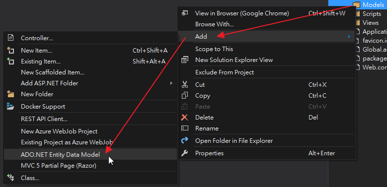
next
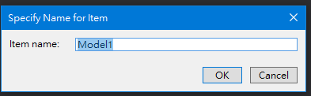
next
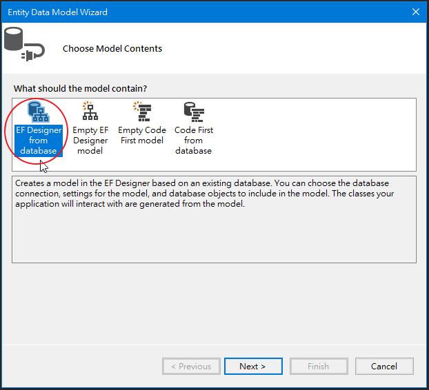
next
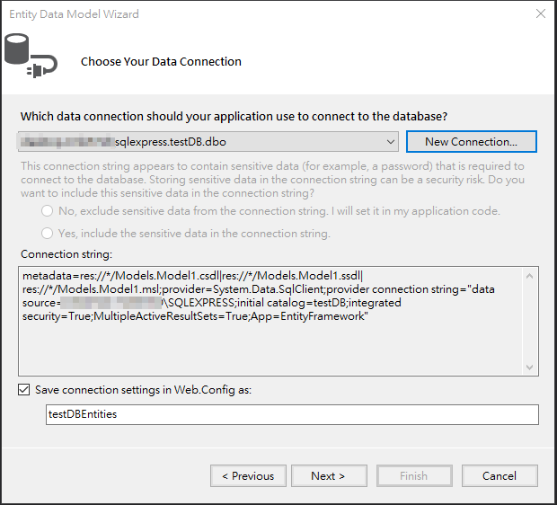
next
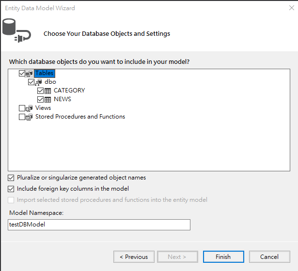
完成後畫面如下
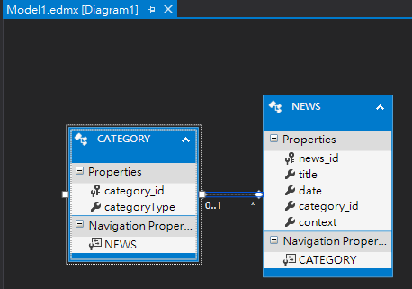
三、在controller資料夾使用scaffolded
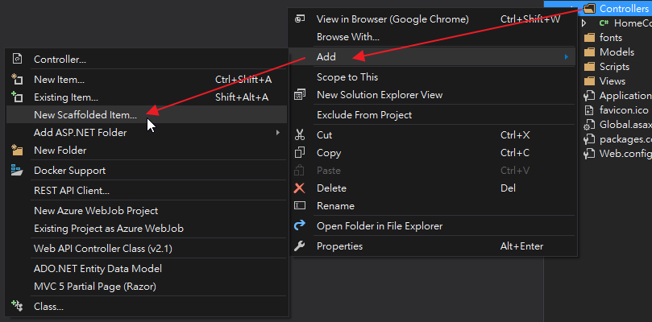
next
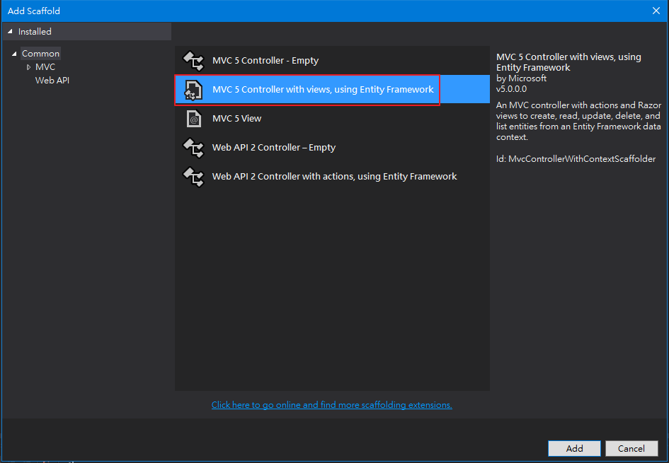
next
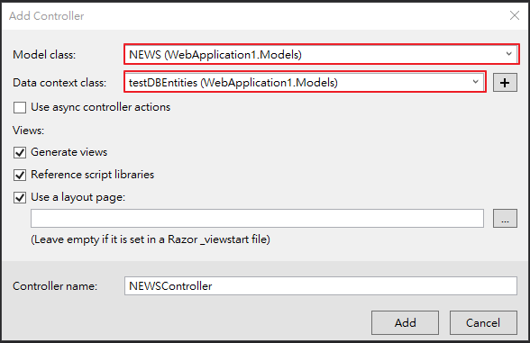
新增完成後在NEWSController裡的Index Action的程式中，
看到了程式為何使用了「Include(n => n.CATEGORY)」？
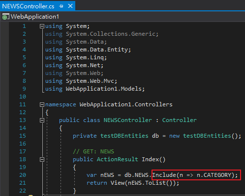
四、探討
不修改程式試著把NEWSController的Index View跑起來
Index View內容為
@model IEnumerable<WebApplication1.Models.NEWS>
@{
ViewBag.Title = "Index";
}
<h2>Index</h2>
<p>
@Html.ActionLink("Create New", "Create")
</p>
<table class="table">
<tr>
<th>
@Html.DisplayNameFor(model => model.title)
</th>
<th>
@Html.DisplayNameFor(model => model.date)
</th>
<th>
@Html.DisplayNameFor(model => model.context)
</th>
<th>
@Html.DisplayNameFor(model => model.CATEGORY.categoryType)
</th>
<th></th>
</tr>
@foreach (var item in Model) {
<tr>
<td>
@Html.DisplayFor(modelItem => item.title)
</td>
<td>
@Html.DisplayFor(modelItem => item.date)
</td>
<td>
@Html.DisplayFor(modelItem => item.context)
</td>
<td>
@Html.DisplayFor(modelItem => item.CATEGORY.categoryType)
</td>
<td>
@Html.ActionLink("Edit", "Edit", new { id=item.news_id }) |
@Html.ActionLink("Details", "Details", new { id=item.news_id }) |
@Html.ActionLink("Delete", "Delete", new { id=item.news_id })
</td>
</tr>
}
</table>
執行結果
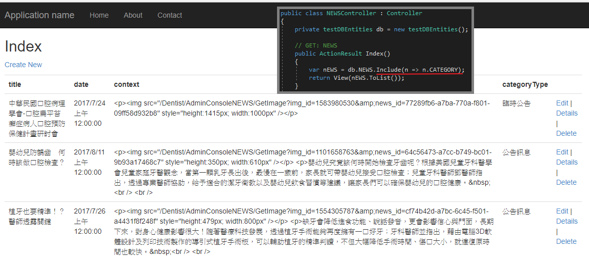
再來看不使用「Include(n => n.CATEGORY)」也是可以正常跑起來
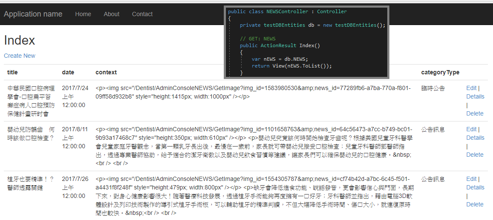
經由網友的解說，原來用途為
「當類別內導航屬性(Navigation Properties)確定會被使用到且頻繁時，
可透過IQueryable擴充方法Include將導航屬性資料也一併取出並儲存於記憶體中。」
其效能可比喻為原本要執行101條SQL指令瞬間變成了1條，這其中的性能可想而知。
要注意使用QueryableExtensions.Include擴充方法時，需事先做「using System.Data.Entity;」才行。
參考資料：
[Entity Framework][LINQ] IEnumerable與IQueryable差異比較